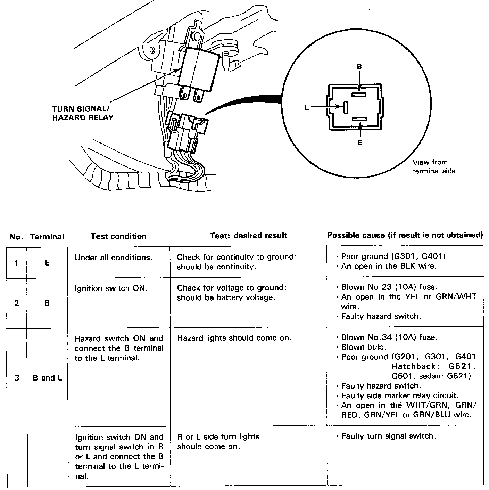

Turn Signal Relay: Testing and Inspection
Turn Signal Relay Input Test
Remove the dashboard lower panel, then remove the turn signal /hazard relay.

Make the following input tests at the relay holder pins. If all tests prove OK, but the relay fails to work, replace the turn signal/hazard relay.